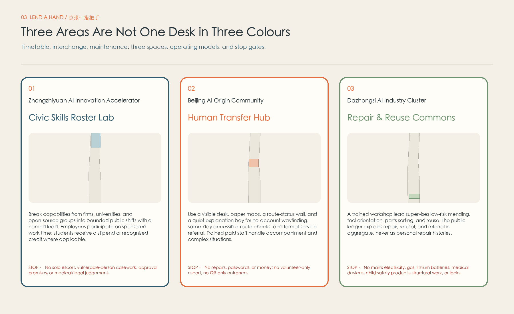
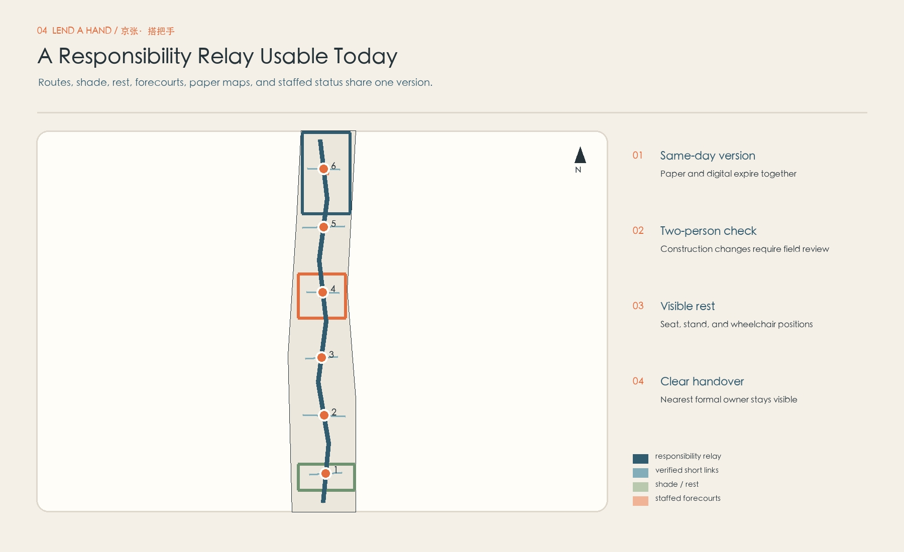
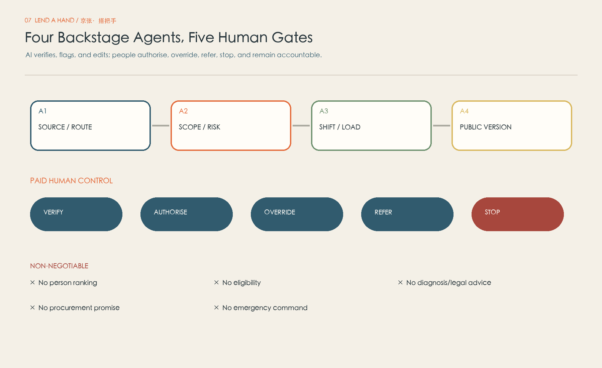
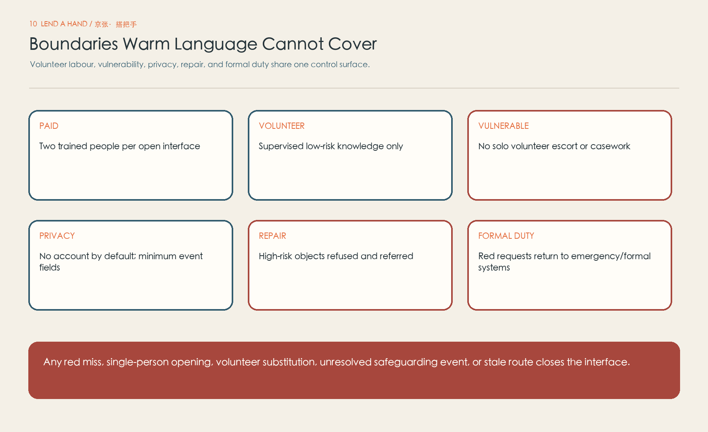
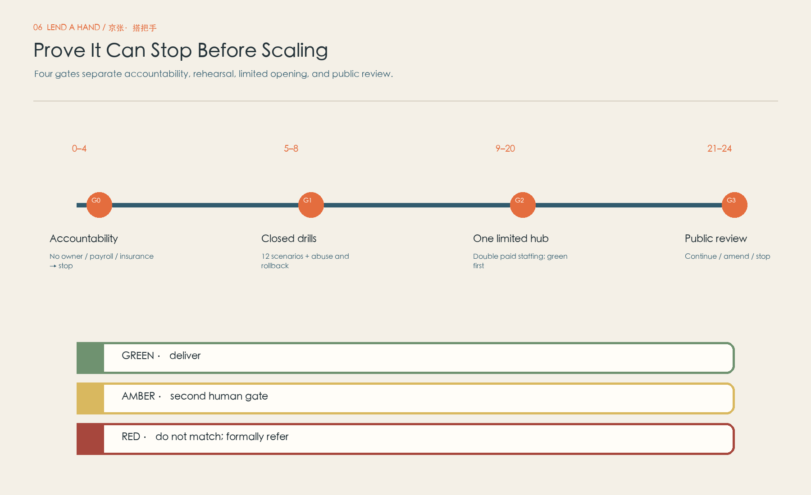
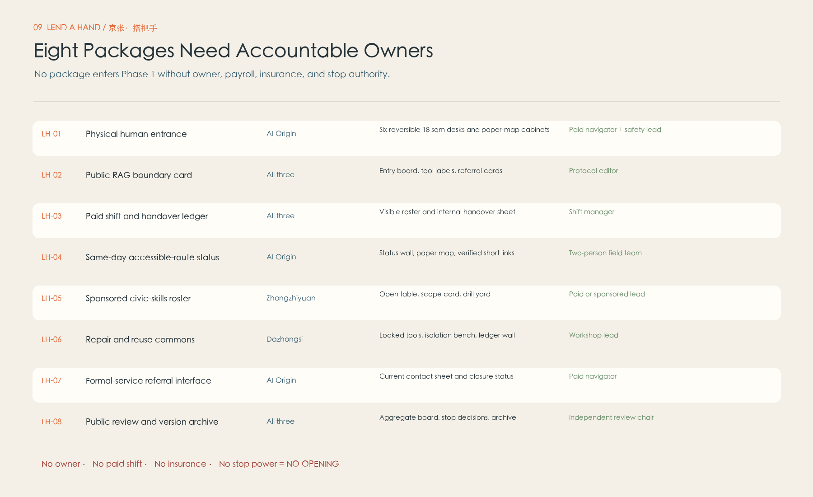
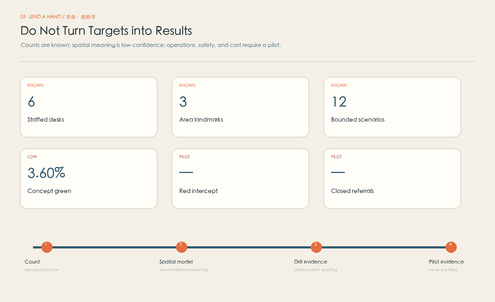

Organise civic capability
Employees contribute through sponsored work time; students require supervision and support. Volunteers accompany and give feedback, but never substitute for rostered jobs.
Rail connects places; Lend a Hand connects responsibility. It does not ask “kind people” to replace public services. It gives an everyday request for help a staffed place, a safe boundary, a responsible referral, and a clear ending.
AI stays backstage: it checks sources and routes, flags risk, forecasts shift load, and drafts accessible versions. Paid people listen, judge, refer, override, and stop. Every spatial claim and visible metric comes from the same provisional geometry model and must be recalculated when official data arrives.
One proposition works at three scales, each with a different job. The strategic study scope organises who may contribute skills and under what conditions. The overall design scope carries a 13.46 km responsibility relay, six staffed entrances, and nine public forecourts. Three key areas separately test skills rosters, human transfer, and qualified repair.
Employees contribute through sponsored work time; students require supervision and support. Volunteers accompany and give feedback, but never substitute for rostered jobs.
Six physical entrances share shift limits, a paper-equivalent route set, referral directories, and a closure protocol. The online layer never replaces a staffed front door.
Zhongzhiyuan tests rosters, AI Origin Community tests transfer, and Dazhongsi tests repair. They are not three colourways of the same table.

Land use follows the path of responsibility rather than a decorative programme mix. Six 18 m² staffed desks sit in existing public interfaces; three 252 m² area interfaces support training, transfer, or repair. The 864 m² concept building footprint is not a construction, demolition, or alteration conclusion.
Visible, seated, and quiet enough to listen, with a paper map, shift board, refusal list, and named formal referrals.
Indoor-outdoor relationships, tools, storage, waiting, and shutdown needs differ by place and require verified sites.
Ownership, fire safety, accessibility, building condition, utilities, heritage, and venue agreements must be confirmed before delivery claims.

Each place must create a distinct public value and acknowledge a distinct responsibility risk. Its space, paid roles, equipment, stop gate, and pilot task therefore form one area-specific package.
Employees use sponsored work time; supported students work with supervisors. The lab does not accept vulnerable-person casework.
Two paid staff provide no-account directions, same-day route checks, paper equivalence, and named formal referrals. No repairs or eligibility decisions.
Qualified supervision covers low-risk repair. Batteries, gas, pressure, medical, and other high-risk objects are refused and professionally referred.

The responsibility relay prioritises existing public transport, walkable links, and reachable public interfaces. Nine concept forecourts total 41,472 m² and support waiting, seated conversation, paper-map reading, shade, and a legible exit. Green space supports comfort and continuity; it is not presented as an unverified ecological outcome.
Every route needs a date, a paid field check, and stale-route rollback. When a path fails, staff provide an alternative rather than asking the person to “try again”.
Rest, shade, drinking water, and accessible waiting belong to mobility nodes. Landscape never replaces staffing or formal duty.
Digital and paper routes share a version number. No phone, account, or particular reading ability is required to ask for help.

AI does not decide who deserves help, determine public-service eligibility, give medical or legal judgement, or handle money and passwords. It prepares evidence and alerts. Every request passes through four human steps and reaches a clear ending.
01 Ask in person: a paid host listens before restating the request in their own words. No account or QR scan is needed to enter.

The 12 scenarios cross six personas, three home areas, and green/amber/red boundaries. Directions, notice-reading, public-resource finding, digital skills, accompanied travel, and low-risk repair must each end in completion, a second check, a responsible referral, or a stop—not a conversation or recommendation loop.

“Lend a Hand” does not transfer risk to a well-meaning neighbour. Paid roles, two-person staffing, training, insurance, incident reporting, safeguarding, privacy minimisation, tool control, and formal referral ownership are opening conditions.
Public information, paper routes, seated explanation, and approved low-risk actions; retain only the minimum event record.
Field route checks, accompanied travel, advanced tools, and uncertainty go to the paid safety lead. Refer when capability is absent.
Medical/legal advice, eligibility, money, passwords, home entry, custody, private cars, and high-risk repair return to emergency or formal systems.
Stop gate: a missed red line, single-person opening, volunteer substitution, unresolved safeguarding event, failed tool isolation, or stale route that cannot be withdrawn closes the affected interface immediately.

The 8 renewal packages are not a simultaneous works list. They form a gated pilot path: confirm responsibility and venue, train and drill, open a narrow shift, then let evidence determine expansion, revision, or closure.
No public service starts without a named operator, payroll, insurance, venue agreement, emergency ownership, and data responsibility in writing.
Begin with limited times and request types, an independent observer, and a pause right. Footfall does not substitute for safety quality.
Expand only when closure, human workload, accessibility, and incident measures pass. Otherwise reduce scope, retrain, redesign, or close.

Space becomes a service only when somebody owns each action at a stated time. Frontline roles include a paid host, shift supervisor, and qualified safety lead. Volunteers may accompany, translate feedback, and co-design; they never open alone, handle amber/red requests, or replace paid roles.
Display the roster and scope; check venue and tools; confirm route versions, referral directory, and emergency contacts.
Keep two paid people present. Humans can override AI. Amber/red events transfer without pushing the person back into an online loop.
Close unfinished matters, withdraw stale routes, count tools, minimise data, and assign a named formal owner for any follow-up.

Geometry metrics are recomputable, but they describe this concept model—not official planning controls. Operations, safety, labour, privacy, and cost remain unknown until responsibility agreements, drills, and a real pilot exist. No imagined values decorate the proposal.
Exact bases: site 11,412,825.386 m²; green space 410,957.154 m²; public space 41,472.0 m². Every displayed value is recomputed from this package's GeoJSON and metrics.json as a single source.

The ten figures do not replace machine-readable evidence. Figures, bilingual narratives, matrices, GeoJSON, and PDFs point to the same proposition, while structured matrices audit requirement coverage.
The final result lives only in self_check.json at package root. Every visual edit requires refreshed manifest hashes and a complete four-gate rerun. This section exposes the check scope; it does not claim independent review or official approval.
Sources are classified as formal-ready, background-only, or provisional-only. Full records, limitations, and retrieval notes live in sources.json; this page gives readers a legible evidence path.
Boundaries and key areas are rough provisional geometry. Planning controls, ownership, existing buildings, streets, utilities, heritage, accessibility, operator, payroll, insurance, data responsibility, and venue agreements remain unconfirmed. Official spatial data must replace the geometry, recompute the three core ratios, and trigger a full drawing review.
This is an agent-generated concept proposal, not an approved statutory plan. It does not imply that government, owners, operators, insurers, or communities have approved, funded, hired, insured, opened a venue, or committed to provide a service.